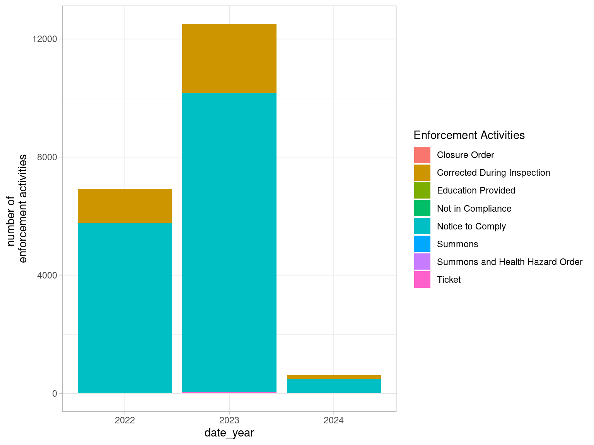

| name | Establishment Address | Status | Type | Date | Minimum Inspections per Year | Severity | Action |
|---|---|---|---|---|---|---|---|
| NEW KANTAMANTO MARKET | 266 EDDYSTONE AVE, Unit-0 | Pass | Food Depot | 2022-04-05 | 2 | NA | NA |
| NEW KANTAMANTO MARKET | 266 EDDYSTONE AVE, Unit-0 | Pass | Food Depot | 2023-03-07 | 2 | M - Minor | Notice to Comply |
| NEW KANTAMANTO MARKET | 266 EDDYSTONE AVE, Unit-0 | Pass | Food Depot | 2023-03-07 | 2 | M - Minor | Notice to Comply |
| NEW KANTAMANTO MARKET | 266 EDDYSTONE AVE, Unit-0 | Pass | Food Depot | 2023-08-25 | 2 | NA | NA |
| # HASHTAG INDIA RESTAURANT | 1871 O'CONNOR DR | Pass | Food Take Out | 2022-04-29 | 3 | M - Minor | Notice to Comply |
| # HASHTAG INDIA RESTAURANT | 1871 O'CONNOR DR | Pass | Food Take Out | 2022-05-26 | 3 | M - Minor | Notice to Comply |
| # HASHTAG INDIA RESTAURANT | 1871 O'CONNOR DR | Pass | Food Take Out | 2022-05-26 | 3 | M - Minor | Notice to Comply |
| # HASHTAG INDIA RESTAURANT | 1871 O'CONNOR DR | Pass | Food Take Out | 2022-05-26 | 3 | M - Minor | Notice to Comply |
| # HASHTAG INDIA RESTAURANT | 1871 O'CONNOR DR | Pass | Food Take Out | 2022-08-10 | 3 | C - Crucial | Notice to Comply |
| # HASHTAG INDIA RESTAURANT | 1871 O'CONNOR DR | Pass | Food Take Out | 2022-08-10 | 3 | M - Minor | Notice to Comply |
Analysis of Food Safety Report from 2022 to 2024 in Toronto
Abstract
Food safety issue has a significant impact on people’s health. This report aims to investigate the regulations on food safety in Toronto from 2022 to 2024. In this paper, I discuss the comparison between two inspection status, the proportion of various severity of infractions, and I produce the result of the establishment types that are most likely to violate food safety regulations in terms of proportion.
1. Introduction
In recent years, food safety has become an important public health issue. More people have started to pay attention to food safety. The purpose of this paper is to provide an in-depth discussion of food safety data and information, and to analyze the food safety situation in the Toronto area.
The “Dinesafe” dataset is a collection of inspection records from various food establishments, containing information such as establishment types, locations, inspection dates, infractions, and outcomes. It is primarily used for public information transparency to help consumers understand the sanitary conditions of the restaurants they visit. In this study, I accessed the “Dinesafe” dataset from the Toronto Open Data Portal(Health 2024). This dataset, supplied by the Toronto Public Health, conducts inspections at all food services and preparation establishments.
2. Data and plots
Dinesafe is a useful dataset which could help public health departments monitor and improve overall sanitation in the food service industry. This data uses a two year timeframe, one of the benefits of this approach is that as some establishments may be inspected once a year and others up to four times, the longer timeframe helps to balance these differences (Besharah, Heacock, et al. 2015). It ensures that sites with fewer inspections are not underestimated. Moreover, the result of the study will become more stable with more observations, reducing the risk of bias due to short-term investigations or outliers.
The dataset comprises 32,000 records of eating or drinking establishments, each detailed across 17 variables. This report primarily analyzes five of these variables: date, establishment type, establishment status, severity, and enforcement action. Utilizing R (R Core Team 2020) and a suite of R packages: “tidyverse” (Wickham et al. 2019), “dplyr” (Wickham et al. 2021), “janitor” (Firke 2021), “kableExtra” (Zhu 2021), “ggplot2” (Wickham 2016) and “knitr” (Xie 2021).
Table 1 displays the initial ten rows of the refined Food Safety dataset. The “Name” variable denotes the business name of each establishment. Variable “Date” specifies the exact calendar date when the inspection took place. “Status” reveals the outcome of the inspection, which can be a pass, a conditional pass, or a closure notice. “Type” categorizes the kind of establishment, ranging from restaurants to mobile carts, among others. “Minimum Inspections per Year” reflects the mandated minimum number of inspections annually for each establishment in Toronto, determined by factors like establishment type, food preparation processes, and the volume and nature of food served. “Severity” classifies the level of infraction into three categories: S for Significant, M for Minor, and C for Crucial. Lastly, “Action” indicates the enforcement measures taken in response to any infractions identified during the inspection.
I would explore the trend of establishment statuses between 2022 and 2024. My focus is on determining the number of various statuses of establishment, which generally represents the results of health inspections at food establishments.
Figure 1 illustrates the annual count of food safety inspections from 2022 to 2024, sorted according to the inspection status of the establishments. The comparison clearly shows that dining establishments receive a pass much more frequently than receive a conditional pass, indicating that most establishments meet the minimum standards set by the health department at the time of inspection. Typically, no significant health violations are found. If the premise receives a conditional pass, it is allowed to continue operating. However, during this period, the operator must rectify the specified violations. Additionally, they are required to display the conditional pass notice in an area within the food premises that is accessible to the public, which effectively promotes food safety assurance in restaurants (Barysheva 2020).
Next, I would draw a pie chart which offers a clear and immediate understanding of the relative frequencies of each severity level.
Figure 2 presents a pie chart depicting the proportions of different severity levels of infractions recorded in the dataset. ‘M - Minor’ is the most common severity level, suggesting that the majority of infractions are of lower risk. In contrast, ‘C - Crucial’ infractions, representing the most severe category, constitute the smallest percentage of the infractions. Even thought less frequent, their critical nature could have significant implications for food safety. Therefore, in studying food safety, greater attention should be paid to these crucial infractions.
Figure 3 highlights the 10 types of establishments with the highest proportion of crucial infractions, indicating potential high-risk areas in terms of food safety. The graph shows that mobile food preparation premises among food establishments are more prone to serious food safety violations, followed by food court vendors and supermarkets. Consequently, mobile food preparation premises represent the highest risk concerning food safety.

Figure 4 provides valuable insights into the enforcement activity trends conducted by food safety inspectors from 2022 to 2024. The data indicates an upward trend in the number of enforcement activities from 2022 to 2023, which might suggest a significant number of infractions or a stricter enforcement policy within the food industry. The comparatively lower number of enforcement activities in 2024 is likely attributed to the fact that 2024 has only just begun. The graph shows that the most common actions taken are ‘corrected during inspection’ and ‘notice to comply,’ indicating that these are typical responses to infractions found during food safety inspections.
3. Discussion
Consumer reviews of restaurants on platforms such as Yelp have become the first choice for customers looking for recommendations. While these websites offer insights into the overall dining experience and food quality, they often lack information about food safety. Some researches suggest that official food safety assessments align closely with customers’ perceptions of restaurants (Kong, Heacock, et al. 2020). In general, restaurants with higher star ratings tend to pose a lower risk to human health in terms of food safety. Nevertheless, official research and regulations on food safety remains crucial.
If certain types of establishments are inspected more frequently than others, they may record more violations because inspectors have more opportunities to detect problems. This may affect the data and make these establishments appear more risky than others. Additionally, if inspections are not evenly distributed across all geographic areas, then the data may not accurately represent the overall food safety situation. Certain areas in Toronto may be under- or over-estimated.
4. Reference
Barysheva, Svitlana. 2020. “The Effect of DineSafe Food Safety Disclosure System on the Patronage of Customers.” Toronto: Ryerson university. https://www. ryerson. ca/content/dam ….
Besharah, Anya, Helen Heacock, et al. 2015. “Dinesafe Toronto: An Evaluation of the Placard System.” BCIT Environmental Public Health Journal.
Firke, Sam. 2021. Janitor: Simple Tools for Examining and Cleaning Dirty Data. https://github.com/sfirke/janitor.
Health, Toronto Public. 2024. Opendatatoronto: Dinesafe. https://open.toronto.ca/dataset/dinesafe/.
Kong, Elaine, Helen Heacock, et al. 2020. “Comparison of Restaurant Inspection Report Results and Its Corresponding Star Ratings on Yelp and Google Reviews.” BCIT Environmental Public Health Journal.
R Core Team. 2020. R: A Language and Environment for Statistical Computing. Vienna, Austria: R Foundation for Statistical Computing. https://www.R-project.org/.
Wickham, Hadley. 2016. Ggplot2: Elegant Graphics for Data Analysis. Springer-Verlag New York. https://ggplot2.tidyverse.org.
Wickham, Hadley, Mara Averick, Jennifer Bryan, Winston Chang, Lucy D’Agostino McGowan, Romain François, Garrett Grolemund, et al. 2019. “Welcome to the tidyverse.” Journal of Open Source Software 4 (43): 1686. https://doi.org/10.21105/joss.01686.
Wickham, Hadley, Romain François, Lionel Henry, and Kirill Müller. 2021. Dplyr: A Grammar of Data Manipulation. https://dplyr.tidyverse.org, https://github.com/tidyverse/dplyr.
Xie, Yihui. 2021. Knitr: A General-Purpose Package for Dynamic Report Generation in r. https://yihui.org/knitr/.
Zhu, Hao. 2021. kableExtra: Construct Complex Table with ’Kable’ and Pipe Syntax. http://haozhu233.github.io/kableExtra/, https://github.com/haozhu233/kableExtra.